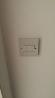

Hi guys,
I am looking for some hardware advice on switches. I am looking to retro fit several light switches so that I can control them using OpenRemote. The issue that I have is that some of my switches are in very tight locations (thanks to a pretty useless builder) and will not be able to be replaced unless I can find something of exactly the same size. I have seen these Fibaro offerings (http://www.vesternet.com/z-wave-fibaro-universal-dimmer?___SID=U) and they look like they may work, but I am curious as to whether you can get them to work for more than a single switch.
As an example, below is a picture of a typical example of the sort of switches I am working with. This one is not in a tight location, but I would ideally like to keep all of the switches the same. 
This switch controls 3 sets of lights. I would like to be able to use a device similar to the one I have linked to above in a way that would let me operate those 3 sets individually as the manual switch does.
{kind=link}
Does anyone know if there is a Z-Wave or LightwaveRF device that would allow this? Any recommendations?
{kind=link}